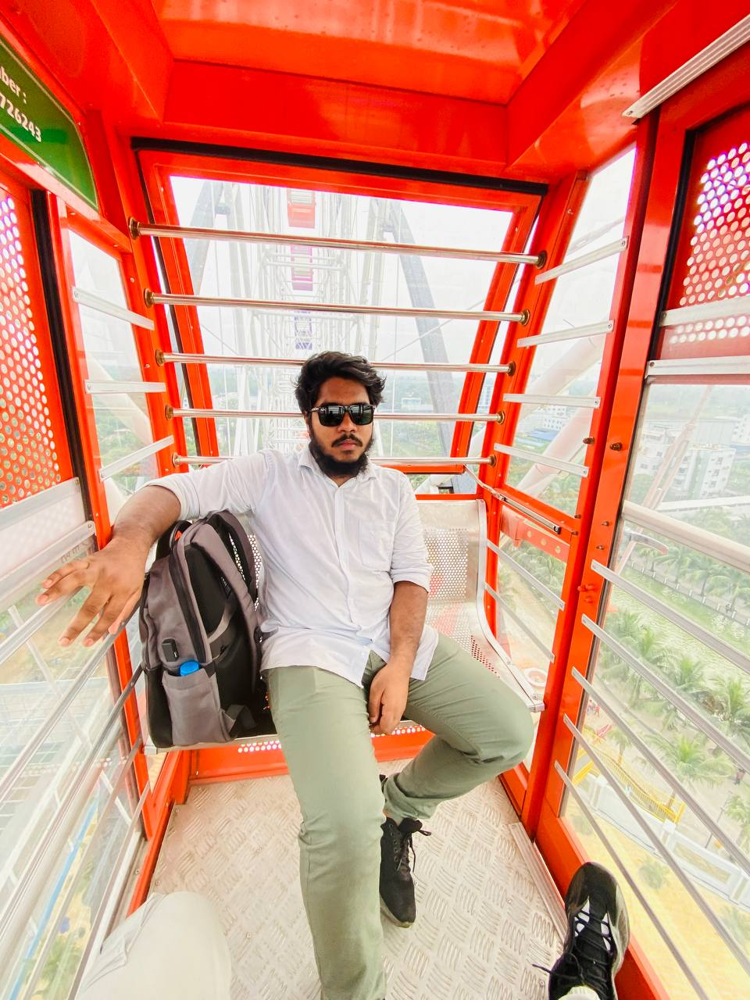

My name is Mohammad Sharowar. I am a young, energetic, and curious individual who always tries to explore new things and improve myself. I am passionate about learning, especially in fields like technology, creativity, and business. I have a deep interest in web development, video editing, and social media content creation. Recently, I’ve also started focusing on building a small business related to seasonal fruits, such as Dinajpur’s famous lychees, and I enjoy working on creative ways to market them online. I always try to learn from my surroundings and people I interact with. I believe in honesty, dedication, and hard work, and I try to apply these values in everything I do. I love spending time with family, exploring nature, and dreaming big about the future. One of my goals is to become financially independent while doing something meaningful. I also enjoy sharing knowledge with others, helping people online, and staying connected with my culture and community. Life is full of possibilities, and I try to make the most out of every moment by staying positive, active, and focused on growth.
I am Mohammad Sharowar, a 22-year-old with a strong interest in technology, creativity, and entrepreneurship. I enjoy learning web development and video editing, and I’m also building a seasonal business selling Dinajpur’s famous lychees through Facebook. I love exploring new ideas, creating content, and helping others online. I believe in hard work, honesty, and staying connected to my roots. My dream is to grow both personally and professionally while making a difference in my community. Whether it's coding, marketing, or communicating with people, I’m always eager to learn and improve. I see challenges as opportunities for growth.